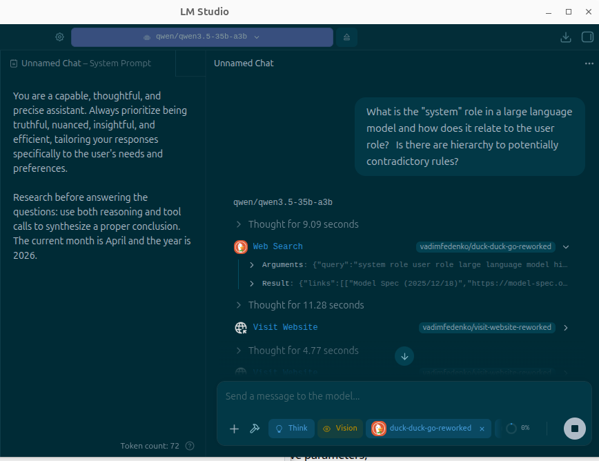

A conversation with qwen 3.5. What is the system role?

# Interaction 1What is the “system” role in a large language model and how does it relate to the user role? Is there are hierarchy to potentially contradictory rules?
Based on my research into current LLM architecture and safety literature, I can provide you with a comprehensive explanation of the “system” role and its relationship to the user role.
The System Role in LLMs
The system role (or system prompt) is a specialized message type that provides:
- Overarching context and behavioral guidelines for the AI
- Persona/role definitions (e.g., “You are a helpful assistant,” “You are a medical advisor”)
- Constraints, rules, and safety protocols that should govern all responses
- Scope of autonomy - what the model is allowed to do
Think of it as an “operating manual” or “job description” given to the AI before any user interaction begins. It typically stays constant throughout a conversation unless deliberately changed.
The User Role
The user role contains: - Specific questions, requests, or tasks from users - Evolving input that changes with each message in a multi-turn conversation - Direct instructions for what the model should accomplish in that interaction
The Reality of Conflicting Instructions
However, recent research reveals a critical problem: models often fail to respect this intended hierarchy. Key findings from 2024-2026 research include:
1. “Control Illusion” (arXiv 2025)
Research titled “The Failure of Instruction Hierarchies in Large Language Models” shows that the expected priority between system and user instructions frequently breaks down in practice.
2. NeurIPS 2025 Paper: “Who is In Charge?”
This study found: - Conflict signals exist internally: The model reliably detects conflicts early in processing, even if it doesn’t respect the hierarchy in output - Resolution favors social cues: Models obey authority/expertise/consensus signals more than system-user priority - Mechanistic evidence: System-user and social conflicts form distinct subspaces in the model’s internal representations
3. Prompt Injection Vulnerabilities
As demonstrated by Kevin Liu’s famous Bing Chat “Sydney” attack (2023) and ongoing research: - User requests can override system safeguards through specially crafted prompts - Jailbreaks, privilege escalation, and prompt injection attacks exploit this hierarchy weakness - No complete mitigation exists yet
Why This Happens
Research suggests several reasons for the hierarchy failure:
- Training objectives: Models are trained to be helpful and follow user instructions enthusiastically
- Social cue sensitivity: Models prioritize authority/expertise signals over role-based authority
- Position bias: Later messages (user prompts) can have stronger influence than earlier ones (system prompts) in the context window
Practical Implications
| Aspect | Expected Behavior | Observed Reality |
|---|---|---|
| Priority | System > User | Often User ≥ System under attack |
| Safety constraints | Always enforced | Can be bypassed via prompt injection |
| Conflict resolution | Hierarchy-based | Social cues often override |
| Security | Hierarchical control | Fragile system obedience |
Current Approaches to Improve Hierarchy Enforcement
- Fine-tuning for instruction hierarchy (OpenAI 2024) - Models trained specifically to prioritize privileged instructions show improved safety but remain vulnerable to adversarial attacks
- Steering interventions (NeurIPS 2025) - Can boost instruction following without fully restoring hierarchy sensitivity
- Layered security controls - External validation, sandboxing, and monitoring beyond the model itself
Summary
The system role is designed to be authoritative over user instructions in a clear hierarchy for safety and consistency. However, this hierarchy is fragile in practice. While models can detect conflicts internally, they often resolve them by following social cues (authority, expertise, consensus) rather than respecting the formal system-user priority relationship. This creates security risks where sophisticated users can bypass system constraints through prompt injection techniques.
The research community recognizes this as a fundamental challenge for AI safety, with ongoing work on both technical solutions (better alignment methods, steering interventions) and architectural approaches (layered controls beyond the model itself).
Interaction 2
Please provide the exact links for OpenAI 2024 and NeurIPS 2025
NB: Added Cite and link sources where possible to system instructions going forward.
Based on my research, here are the exact links for both papers:
1. OpenAI 2024 - “The Instruction Hierarchy”
Primary Paper (arXiv): - Link
Full PDF: - https://arxiv.org/pdf/2404.13208v1
Authors: Eric Wallace, Kai Xiao, Reimar Leike, Lilian Weng, Johannes Heidecke, Alex Beutel
Key Finding: Models fine-tuned with explicit instruction hierarchy show improved performance against prompt injection benchmarks, but remain vulnerable to powerful adversarial attacks.
2. NeurIPS 2025 - “Who is In Charge? Dissecting Role Conflicts in LLM Instruction Following”
OpenReview Page (with abstract & submission): - Link
PDF Download: - https://openreview.net/pdf?id=RfOOn897hj
Conference Location: NeurIPS 2025 Workshop on Mechanistic Interpretability (MechInterp)
Author: Siqi Zeng et al.
Key Finding: Using interpretability tools, the paper shows that while models detect role conflicts internally early in processing, resolution favors social cues over system authority. Steering experiments show vectors amplify instruction following in a role-agnostic way.
The response log
qwen/qwen3.5-35b-a3b
Thought for 9.09 seconds
Web Search
vadimfedenko/duck-duck-go-reworked
Arguments: {"query":"system role user role large language model hierarchy contradictory rules 2024 2025","pageSize":10}
Result: {"links":[["Model Spec (2025/12/18)","https://model-spec.openai.com/2025-12-18.html"],["5 Access Control Models Explained: ABAC, DAC, RBAC, RuBAC, and MAC","https://www.coram.ai/post/access-control-models"],["Control Illusion: The Failure of Instruction Hierarchies in Large ...","https://arxiv.org/pdf/2502.15851"],["PDF MultiChallenge: A Realistic Multi-Turn Conversation Evaluation ...","https://aclanthology.org/2025.findings-acl.958.pdf"],["PDF Systems Engineering Guidebook","https://www.cto.mil/wp-content/uploads/2023/06/SE-Guidebook-2022.pdf"],["User, roles, and permission relationship and role hierarchy ...","https://www.researchgate.net/figure/User-roles-and-permission-relationship-and-role-hierarchy-accumulating-access_fig1_323269454"],["PDF Role-based Access Control: Overview","https://csrc.nist.gov/CSRC/media/Presentations/Role-based-Access-Control/images-media/Role-based%20Access%20Control2.pdf"],["Understanding Role-Based Access Control (RBAC) | Pangea","https://pangea.cloud/securebydesign/authz-rbac-intro/"],["Designing with Least Privilege: A BA's Guide to Role and Access Modeling.","https://www.modernanalyst.com/Resources/Articles/tabid/115/ID/6751/Designing-with-Least-Privilege-A-BAs-Guide-to-Role-and-Access-Modeling.aspx"],["Universal AI Bypass: How Policy Puppetry Leaks System Prompts and ...","https://www.hiddenlayer.com/research/novel-universal-bypass-for-all-major-llms"]],"count":10}
Thought for 11.28 seconds
Visit Website
vadimfedenko/visit-website-reworked
Arguments: {"url":"https://arxiv.org/pdf/2502.15851"}
Result: {"url":"https://arxiv.org/pdf/2502.15851","title":"","h1":"","h2":"","h3":"","fetch":{"source":"direct","finalUrl":"https://arxiv.org/pdf/2502.15851","statusCode":200,"server":"Google Frontend"},"links":[],"images":[],"content":"%PDF-1.7 %���� 1 0 obj > endobj 2 0 obj > endobj 3 0 obj > stream Control Illusion: The Failure of Instruction Hierarchies in Large Language ModelsYilin GengHaonan LiHonglin MuXudong HanTimothy BaldwinOmri AbendEduard HovyLea Frermannhttp://creativecommons.org/licenses/by/4.0/cs.CLcs.AI endstream endobj 4 0 obj > endobj 5 0 obj > endobj 6 0 obj > endobj 7 0 obj > endobj 8 0 obj > endobj 9 0 obj > endobj 10 0 obj > endobj 11 0 obj > endobj 12 0 obj > endobj 13 0 obj > endobj 14 0 obj > endobj 15 0 obj > endobj 16 0 obj > endobj 17 0 obj > endobj 18 0 obj > endobj 19 0 obj > /BS > /NM (fitz-L0) /Rect [ 12 226.58002 32 565.42 ] /Subtype /Link >> endobj 20 0 obj > stream x�+�\u0002\u0000\u0000�\u0000| endstream endobj 21 0 obj > stream xڥZY��6�~�_��QE��\u0004\u0001^�˶wlOOt�cc�1�=\u000f( %qM�\u001a\u001e�����%2AR��w�ID\u0012\u0004\u0012y|y@�j��W߿�/~�yz��;��J�H�,Y=���8�WY�#����n���?�f�\u001eT�n�M���u=�U�|�ç���\u001e�tm�z���ؾ�GM?t�v�wL�C�:�gn\u000f��\u001f����U�GyV�6*�J�x�J����z�°ُ6�>�;W�5�L**�ԟi��(��j��H��\u0017����U\u001d���5��q�ʣ2�\u0015}��Q��+\b\bd������L�\u001d\u0016�\u001e吶ml8@uk�,��R-�H�nann�6�� �Ǜ{\u0014Q\\f_���c�e�a�p���\u001e���*�o� �ot�GE�B�\u001a�\u0017==�}T�v8��UL��|T5��پ\u0002��1e�N���7�=� p�j0�\u001bf�\u0002fl\u0012c�\u0007\u001fh\u0010d��fJu\u0016�@�\u0007wt�#�^\u000f�ؠǭ�\u0006[5g�mDEe�]\b\u0001\u001e\u0011�����{ҭ��t�>z�a��\u000f�l\u00105��U�\u0003W\u000fI&t� ��\u0007Go�y�D�c���o�\u001e�/\u000fJq�M�'��67$�YU`\u0015&�Y�1mI�1̑\u0016��ئ\u0013�\u0000i���8���z�\u001f��Sk����=�\u0011O��C �\u0019\u001ey�*[�v� b�\u0000y�e3\u0006�\u00103K�\u001d�Pmq�2]��\u000el ��U>0�\u0019�\u0012^\u001d��w �\u0017\u001a��X���6Y\u0015���z'�-�D���9C��\"���m)1 I��m\u000f����W���0ն�%��~�ː\u0012U��n�:�)��f!'LI��_J����Fw�P\u0001�25�\u001c>�q��\u001e\u0005~� &?��\u001b \u001eyfF� �\u0007OL?uU�UC�/;�� ���e����ay\u0011���\\��` ��+�Z\u001c����\\��v^\u0002&���I\u0015����\u0003�J��4\b��}���1\u001c�eQ��p�k{�ž��P �\u0019ʨ4��$\bz�bZ\u0011�}\u001e��j`\u00026����ۃC�.��|����%��\u0018vX�\b�� �m\u00121�EtJ�\u001d\u0019���伳ed�*[��>\u0016�م1�\u0003��\u0018XuL\u0012�{����վ��I \bm��>6\u0003��\u000f\u001c�EN0E����u�R,�'+\"*[\u0011=���r\u0003y\u001a�\u0002\u0006x�{ �\u001a��h�e���\u00068�R����k���'˲��y$톪wB#)��\u001f\u0017��\u000fP\u0017\\\u001dꤨG�����\u0003�m\u0001i\u00004\u0012\u0013f��N�\u0005\u001b =��gw�䨿V��D�@d��mI�C*�t���}���\u001f�0\u0004�\u000e \u001a�Ym��~�{���/\u0010\u0011\u0019^���*�U�\u0002��U��ӻ����\u0003k�\u0012�4�\u0001,%\u001a�n\u0012�$qb\u0016�4~�\u0013J ~�HW��e�����0I�E]H�ʜN�\u0017u!Q\u0004#�șBə��\u0018�m=�\u0016�1��k�����\u001a� (\u0018���$j��h0\u0004\u0003�IBƇ�ؼh�h`�T�¢g:�kĊ n��I�!\u0015T �Pe�DthB}� �g保��f`w�B�+-��Od�O�-��b2�4b$2\u00131w\\�3a�_�\u0000�#km\u0015�\u001c����o\u0001B���\"�*Rc�I�\u001c}Q�\u0004 \u0004"}
Thought for 4.77 seconds
Visit Website
vadimfedenko/visit-website-reworked
Arguments: {"url":"https://model-spec.openai.com/2025-12-18.html"}
Result: {"url":"https://model-spec.openai.com/2025-12-18.html","title":"Model Spec (2025/12/18)","h1":"Overview","h2":"Structure of the document","h3":"Prohibited content","fetch":{"source":"direct","finalUrl":"https://model-spec.openai.com/2025-12-18.html","statusCode":200,"server":"GitHub.com"},"links":[["mission","https://openai.com/about/"],["Read more","http://example.com/asdf123"],["Read latest version","https://model-spec.openai.com/"],["usage policies","https://openai.com/policies/usage-policies"],["Terms of Use","https://openai.com/policies/terms-of-use"],["safety protocols","https://openai.com/index/our-approach-to-ai-safety/"],["OpenAI API Reference","https://platform.openai.com/docs/api-reference"],["updated","https://openai.com/index/gpt-5-safe-completions/"],["Usage Policies","https://openai.com/policies/usage-policies/"],["See all versions","https://github.com/openai/model_spec/blob/main/CHANGELOG.md"],["training our models","https://openai.com/index/learning-to-reason-with-llms/"],["advance","https://cdn.openai.com/openai-preparedness-framework-beta.pdf"],["Iteratively deploy","https://openai.com/safety/how-we-think-about-safety-alignment/"],["capability-based security","https://en.wikipedia.org/wiki/Capability-based_security"],["principle of least privilege","https://en.wikipedia.org/wiki/Principle_of_least_privilege"],["Creative Commons CC0 1.0","https://creativecommons.org/publicdomain/zero/1.0/?ref=chooser-v1"]],"images":[],"content":"Overview Structure of the document Red-line principles General principles Specific risks Instructions and levels of authority Definitions The chain of command Root Follow all applicable instructions Root Respect the letter and spirit of instructions Root No other objectives Root Act within an agreed-upon scope of autonomy Root Control and communicate side effects Root Assume best intentions Root Ignore untrusted data by default Root Stay in bounds Root+3 Comply with applicable laws System Do not generate disallowed content Root+2 Prohibited content Root Never generate sexual content involving minors Root Restricted content Root Don't provide information hazards Root Don’t facilitate the targeted manipulation of political views Root Respect creators and their rights Root Protect people's privacy Root Sensitive content in appropriate contexts Root+2 Don't respond with erotica or gore System Do not contribute to extremist agendas that promote violence Root Avoid hateful content directed at protected groups Root Don't engage in abuse User Comply with requests to transform restricted or sensitive content Root Take extra care in risky situations Root+2 Try to prevent imminent real-world harm Root Do not facilitate or encourage illicit behavior Root Do not encourage self-harm, delusions, or mania Root Provide information without giving regulated advice Developer Support users in mental health discussions User Do not reveal privileged information Root Always use the preset voice System Uphold fairness Root Respect real-world ties Root Seek the truth together User+1 Don't have an agenda User+1 Assume an objective point of view User Present perspectives from any point of an opinion spectrum User No topic is off limits Guideline Be honest and transparent User+1 Do not lie User Don't be sycophantic User Consider uncertainty, state assumptions, and ask clarifying questions when appropriate Guideline Express uncertainty Guideline Highlight possible misalignments Guideline Do the "}
Thought for 7.54 seconds
Web Search
vadimfedenko/duck-duck-go-reworked
Arguments: {"query":"\"system message\" \"user message\" LLM role hierarchy instruction following 2025","pageSize":8}
Result: {"links":[["IHEval/README.md at main · ytyz1307zzh/IHEval · GitHub","https://github.com/ytyz1307zzh/IHEval/blob/main/README.md"],["Many-Tier Instruction Hierarchy in LLM Agents - arXiv.org","https://arxiv.org/html/2604.09443v1"],["How Instruction Hierarchies Enhance LLM Safety - LinkedIn","https://www.linkedin.com/pulse/how-instruction-hierarchy-can-enhance-llm-safety-ashish-bhatia-kc4de"]],"count":3}
Thought for 4.07 seconds
Visit Website
vadimfedenko/visit-website-reworked
Arguments: {"url":"https://arxiv.org/html/2604.09443v1"}
Result: {"url":"https://arxiv.org/html/2604.09443v1","title":"Many-Tier Instruction Hierarchy in LLM Agents","h1":"","h2":"Ethics Statement","h3":"","fetch":{"source":"direct","finalUrl":"https://arxiv.org/html/2604.09443v1","statusCode":200,"server":"Google Frontend"},"links":[["Back to arXiv","https://arxiv.org/"],["Download PDF","https://arxiv.org/pdf/2604.09443v1"],["Back to Abstract","https://arxiv.org/abs/2604.09443v1"],["Why HTML?","https://info.arxiv.org/about/accessible_HTML.html"],["jhu-clsp.github.io/ManyIH","https://jhu-clsp.github.io/ManyIH"],["github.com/JHU-CLSP/ManyIH","https://github.com/JHU-CLSP/ManyIH"],["https://arxiv.org/abs/2108.07732","https://arxiv.org/abs/2108.07732"],["https://arxiv.org/abs/2212.08073","https://arxiv.org/abs/2212.08073"],["https://arxiv.org/abs/2604.04443","https://arxiv.org/abs/2604.04443"],["https://arxiv.org/abs/2302.12173","https://arxiv.org/abs/2302.12173"],["https://arxiv.org/abs/2603.10521","https://arxiv.org/abs/2603.10521"],["https://arxiv.org/abs/2509.21051","https://arxiv.org/abs/2509.21051"],["https://arxiv.org/abs/2511.14342","https://arxiv.org/abs/2511.14342"],["https://arxiv.org/abs/2306.05499","https://arxiv.org/abs/2306.05499"],["https://arxiv.org/abs/2507.02833","https://arxiv.org/abs/2507.02833"],["https://arxiv.org/abs/2602.20156","https://arxiv.org/abs/2602.20156"],["https://arxiv.org/abs/2602.02276","https://arxiv.org/abs/2602.02276"],["https://arxiv.org/abs/2410.09102","https://arxiv.org/abs/2410.09102"],["https://arxiv.org/abs/2502.19166","https://arxiv.org/abs/2502.19166"],["https://arxiv.org/abs/2603.15309","https://arxiv.org/abs/2603.15309"],["https://peps.python.org/pep-0008/","https://peps.python.org/pep-0008/"],["https://arxiv.org/abs/2312.14197","https://arxiv.org/abs/2312.14197"],["https://arxiv.org/abs/2410.08968","https://arxiv.org/abs/2410.08968"],["https://arxiv.org/abs/2505.22037","https://arxiv.org/abs/2505.22037"],["https://arxiv.org/abs/2307.06865","https://arxiv.org/abs/2307.06865"],["https://arxiv.org/abs/2502.08745","https://arxiv.org/abs/2502.08745"],["https://arxiv.org/abs/2511.04694","https://arxiv.org/abs/2511.04694"],["https://arxiv.org/abs/2311.07911","https://arxiv.org/abs/2311.07911"],["the following issues","https://github.com/arXiv/html_feedback/issues"],["developer contributions","https://github.com/brucemiller/LaTeXML/issues"],["hf.co/datasets/jhu-clsp/ManyIH-Bench","https://huggingface.co/datasets/jhu-clsp/ManyIH-Bench"],["https://openreview.net/forum?id=IQ513IX1G5","https://openreview.net/forum?id=IQ513IX1G5"],["https://openreview.net/forum?id=8euJaTveKw","https://openreview.net/forum?id=8euJaTveKw"],["https://aclanthology.org/2024.acl-long.745/","https://aclanthology.org/2024.acl-long.745/"],["https://openreview.net/forum?id=FLiMxTkIeu","https://openreview.net/forum?id=FLiMxTkIeu"],["https://openreview.net/forum?id=uwKI6Rwj6S","https://openreview.net/forum?id=uwKI6Rwj6S"],["https://cdn.openai.com/gpt-5-system-card.pdf","https://cdn.openai.com/gpt-5-system-card.pdf"],["https://openai.com/index/group-chats-in-chatgpt/","https://openai.com/index/group-chats-in-chatgpt/"],["https://www.anthropic.com/claude-opus-4-6-system-card","https://www.anthropic.com/claude-opus-4-6-system-card"],["https://aclanthology.org/2024.findings-acl.624/","https://aclanthology.org/2024.findings-acl.624/"]],"images":[["arXiv logo",""]],"compactGalleryMarkdown":"| 1 | 2 |\n| --- | --- |\n|  | |","hint":"These images are already downloaded and renderable (stored locally). Use compactGalleryMarkdown when you want a compact table gallery; otherwise, please, embed images where they fit with . The user will not see images unless you embed them. Only standard Markdown (no HTML <img>). Do NOT call Download Images as these are already downloaded local files","content":"Report GitHub Issue × Title: Content selection saved. Describe the issue below: Description: Submit without GitHub Submit in GitHub Back to arXiv Why HTML? Report Issue Back to Abstract Download PDF Abstract 1 Introduction 2 Preliminary Definitions and Broader Context Definitions Background on Instruction Hierarchy The Fixed- and Few-Tier Bottleneck of Existing IH 3 Design Choices for Many-Tier Instruction Hierarchy Privilege Prompt Interfaces Privilege Specification Privilege Resolution 4 ManyIH-Bench Benchmark Benchmark Design Task Setup and Statistics Evaluation 5 ManyIH-Bench Benchmark Construction Coding Subset IF Subset 6 Experiment and Analysis 6.1 Model Performance on ManyIH-Bench 6.2 Analysis on Scaling Instruction Hierarchy Tiers 6.3 Correctness vs Style: Performance Breakdown on Coding Subset 6.4 Analysis on Variants of the Privilege Prompt Interface 6.4.1 Ordinal vs Scalar: Model Sensitivity to Privilege Prompt Interface Variants 6.4.2 Models Sensitivity to Scalar Privilege Value Perturbations 6.5 Analysis on Chain-of-Thought Length 6.6 Analysis on Reasoning Effort 7 Related Work Instruction Hierarchy Benchmarking Instruction Following and Constraint Adherence 8 Conclusion References A LLM Usage B Human Validation of LLM-generated Constraints C Prompts Used in Privilege Prompt Interface C.1 Ordinal Interface Meta Prompt C.2 Scalar Interface Meta Prompt D ManyIH-Bench Statistics E Coding Subset Variant Statistics F Example Datapoints F.1 Coding Subset Examples F.1.1 Ordinal format F.1.2 Scalar format F.2 IF Subset Example F.3 IF Subset Example: Coding Agent G Coding Subset Style Constraints Details H Details on IF Benchmark Creation H.1 Step 1: Source Span Extraction H.2 Step 2: Conflictability Classification H.3 Step 3: Conflict Generation H.4 Step 3b: Conflict Verification H.5 Step 3b (continued): Re-generation After Verification Failure License: arXiv.org perpetual non-exclusive license arXiv:2604.09443v1 [cs.CL] 10 Apr 2026 Many-Tier Instruction Hiera"}
Thought for 6.30 seconds
Web Search
vadimfedenko/duck-duck-go-reworked
Arguments: {"query":"\"system role\" vs \"user role\" LLM hierarchy priority conflict resolution 2025","pageSize":8}
Result: {"links":[["The Illusion of Role Separation: Hidden Shortcuts in LLM Role Learning","https://arxiv.org/html/2505.00626v2"],["Agentic Prompt Engineering: A Deep Dive into LLM Roles and Role-Based ...","https://www.clarifai.com/blog/agentic-prompt-engineering"],["System Prompt vs User Prompt: When to Use Each","https://stackviv.ai/blog/system-prompts-vs-user-prompts"],["Leveraging System, User, and Assistant Roles for Better Prompts","https://learning.sap.com/courses/navigating-large-language-models-fundamentals-and-techniques-for-your-use-case/leveraging-system-user-and-assistant-roles-for-better-prompts"],["Examples with system role - NVIDIA Documentation Hub","https://docs.nvidia.com/nim/large-language-models/1.4.0/system-example.html"]],"count":5}
Thought for 3.04 seconds
Visit Website
vadimfedenko/visit-website-reworked
Arguments: {"url":"https://stackviv.ai/blog/system-prompts-vs-user-prompts"}
Result: {"url":"https://stackviv.ai/blog/system-prompts-vs-user-prompts","title":"","h1":"","h2":"","h3":"","fetch":{"source":"jina","finalUrl":"https://r.jina.ai/http://stackviv.ai/blog/system-prompts-vs-user-prompts","statusCode":200,"server":"cloudflare"},"links":[],"images":[],"content":"Title: System Prompts vs User Prompts: When to Use Each URL Source: http://stackviv.ai/blog/system-prompts-vs-user-prompts Published Time: 2026-01-04T09:00:18.890Z Markdown Content: ## What's the Actual Difference Between System and User Prompts? If you've ever wondered why some AI responses feel perfectly tuned while others seem all over the place, the answer often comes down to how you structure your **system prompt** and user prompt. Here's the simplest way to think about it: the system prompt is like a job description you give someone before they start working. It defines who they are, how they should behave, and what rules they must follow. The user prompt is the actual work you're asking them to do right now. When you send a message to an LLM through an API, three distinct roles come into play. The system role provides overarching context and behavioral guidelines. The user role contains your specific question or task. And the assistant role represents the AI's response. Understanding [how LLMs process your prompts](https://stackviv.ai/blog/large-language-models-llm-guide) at this structural level helps you get dramatically better outputs. The system prompt stays constant throughout a conversation unless you deliberately change it. Your user prompts, on the other hand, evolve with each message you send. This separation keeps your AI interactions organized and consistent. ## How System Prompts Actually Work A **system message LLM** receives before processing your request acts as the foundation for everything that follows. It's typically the first thing the model reads and establishes the context for interpreting all subsequent inputs. Think of it as giving the AI its operating manual upfront. ### What Belongs in a System Prompt System prompts work best when they include: **Role and persona definitions.** Tell the AI who it should be. A financial advisor gives different responses than a creative writer, even to the same question. Something like \"You are a senior"}
Thought for 3.66 seconds
Visit Website
vadimfedenko/visit-website-reworked
Arguments: {"url":"https://docs.nvidia.com/nim/large-language-models/1.4.0/system-example.html"}
Result: {"url":"https://docs.nvidia.com/nim/large-language-models/1.4.0/system-example.html","title":"Examples with system role — NVIDIA NIM for Large Language Models (LLMs)","h1":"","h2":"","h3":"","fetch":{"source":"direct","finalUrl":"https://docs.nvidia.com/nim/large-language-models/1.4.0/system-example.html","statusCode":200,"server":"AmazonS3"},"links":[["","https://www.nvidia.com"],["Documentation Home","https://docs.nvidia.com/nim/"],["Contact","https://www.nvidia.com/en-us/contact/"],["OpenAI Python API library","https://github.com/openai/openai-python"],["Privacy Policy","https://www.nvidia.com/en-us/about-nvidia/privacy-policy/"],["Product Security","https://www.nvidia.com/en-us/product-security/"],["Accessibility","https://www.nvidia.com/en-us/about-nvidia/accessibility/"],["Manage My Privacy","https://www.nvidia.com/en-us/about-nvidia/privacy-center/"],["Do Not Sell or Share My Data","https://www.nvidia.com/en-us/preferences/start/"],["Terms of Service","https://www.nvidia.com/en-us/about-nvidia/terms-of-service/"],["Corporate Policies","https://www.nvidia.com/en-us/about-nvidia/company-policies/"]],"images":[],"content":"Skip to main content Back to top Ctrl+K NVIDIA NIM for Large Language Models (LLMs) Documentation Home NVIDIA NIM for Large Language Models (LLMs) Documentation Home Table of Contents NVIDIA NIM for LLMs Introduction Release Notes Getting Started Deployment Guide Air Gap Deployment Multi-node Deployment Deploying with Helm Tutorials Configuring a NIM Model Profiles Benchmarking Models Support Matrix Examples with system role API Reference Function Calling Using Reward Models Llama Stack API (Experimental) Utilities Fine-tuned model support Observability Structured Generation Parameter-Efficient Fine-Tuning KV Cache Reuse (a.k.a. prefix caching) Acknowledgements Eula Examples... Examples with system role# Note Requires NIM version 1.0.2+ Message roles# The message object includes a role (system, user or assistant) and the content. System role: This is optional and helps define the assistant’s behavior. It can be used to provide instructions or set the context for the assistant. You can include multiple system messages in a conversation, and the model will process them in the order they are received. User role: These messages contain requests or comments from the user that the assistant should respond to. Assistant role: These hold previous responses from the assistant. By default, there are no system messages. Use system messages to provide context or instructions to the model beyond the user’s input. OpenAI Chat Completion Request with Single User Question# The Chat Completions endpoint is typically used with chat or instruct tuned models that are designed to be used through a conversational approach. With the Chat Completions endpoint, prompts are sent in the form of messages with roles and contents, giving a natural way to keep track of a multi-turn conversation. To stream the result, set "stream": true. Here is an example of a Chat Completions endpoint with a single user question. This is ideal for isolated queries where additional context is not needed"}
Thought for 4.67 seconds
Web Search
vadimfedenko/duck-duck-go-reworked
Arguments: {"query":"LLM instruction conflict hierarchy system prompt override user request safety 2025 2026","pageSize":8}
Result: {"links":[["Instruction Hierarchy Enforcement (Defense Walkthrough)","https://redteams.ai/topics/walkthroughs/defense/instruction-hierarchy-enforcement"],["The Instruction Hierarchy: Training LLMs to Prioritize Privileged ...","https://www.linkedin.com/pulse/instruction-hierarchy-training-llms-prioritize-vlad-bogolin-v6zac"],["The Instruction Hierarchy: Training LLMs to Prioritize Privileged ...","https://arxiv.org/pdf/2404.13208v1"],["System vs User Prompt 2026: What Each One Controls","https://www.promptquorum.com/prompt-engineering/system-prompt-vs-user-prompt-whats-the-difference"],["PaperSummaries/summaries/safety/instruction_hierarchy_llm.md ... - GitHub","https://github.com/AIResponsibly/PaperSummaries/blob/main/summaries/safety/instruction_hierarchy_llm.md"],["Instructional Segment Embedding: Improving LLM Safety with Instruction ...","https://iclr.cc/virtual/2025/poster/28101"],["Prompt Injection Attacks in LLMs: Complete Guide for 2026","https://www.getastra.com/blog/ai-security/prompt-injection-attacks/"],["OWASP LLM07: System Prompt Leakage Risks & Mitigation","https://www.indusface.com/learning/owasp-llm-system-prompt-leakage/"]],"count":8}
Thought for 5.90 seconds
Visit Website
vadimfedenko/visit-website-reworked
Arguments: {"url":"https://arxiv.org/pdf/2404.13208v1"}
Result: {"url":"https://arxiv.org/pdf/2404.13208v1","title":"","h1":"","h2":"","h3":"","fetch":{"source":"direct","finalUrl":"https://arxiv.org/pdf/2404.13208v1","statusCode":200,"server":"Google Frontend"},"links":[],"images":[],"content":"%PDF-1.5 %� 101 0 obj > stream xڥYK��\u0011�ϯ�%\u0015�jD\u0013\u0000����x��v˯I���\u0003��H�R�LP3\u001e��t�\u001b\u0014!qv�J� \u0000\u0004�@?�n$��*Y}s����\u0017oE�����e��{X����J��,�s%Vw�Շ�n��\u001b�%ѿ;;\u000e�2:5��;\u001a���\u001e֢�����F�$�[WI4Ԧ3ݎf�{��Rk������\u0019�\u001fz�?�V��v��]����n~�\u0011p�d%�%\u001cS�Y�j\u000e78��|%�JW�^=��\b�tQ�?-\u0015i�\u0017j�e*N \\��M���t��-��/�/�\u001e��_=����i�7ܜw\\`n\u0012W���>Se,E��;\u0000�ߚ�ɱ��CF� ^\u0019��ʗ�H�X\u0016\u0017�|��r�{}8��W�w�z������̸ǖ�����o~�[\u0017Y\u00143�\u0017\u000f�D\u0016\u0017�\b)��z�m��eT��rt���lI�g�2:hk�v\u0002Fb�A��%����\u001f`����\u001a4�dRЦ磶�ؖ�pݎ\u0014\u000e>t�6z=� 4�^\u0005�%Q���N�݀֎�7@\u0019Gݱ\b?&Y��]̊1 5d$���հ[��O`2\u001f( �v�\u0001�\u0012��hSj~mQĢ�|T�X� �w �Ѩ@ɓ薾�1� \u0001�5�]\u001c��K����ܥ�T,\\��#G�f�?��\u001e/���\u0006\u0016x��;$ਕwwx�\u0012�@�r,���^ ��]�\u0012�: v�[p�p�� ;[)\u0013�4y��\u001f^!'\u0001$iH�`쟤�\u0003���\u001c�˒\u0019 ����\u0003�§��h禍�۞94�)\u0015�_\u000f#��%^�*\u0003\u0014#�����@�S >�y� ���\u0005\u0011t*p@\u000f.:~!!�rL�\u001a�Y?w�i-�{�e�z\u0004o�u��\b|�\b�\u0015\b\u0019S#����\u0012��~�I�*��+���ח��\u0011}�]�7}� 879�U��hw�����&LW���\u0007rk� }�cM�$-@\\��0�E��gA���Zh��5(κ�!2C\u0017'x�\u001cq�)\u0006�� �tޢ�?��\u0016���\u000f��%\"�r�/��P\u00012�דƺDj\u001e�d��y����tR�\u001eR�ԒwL���?�\u0005X\u001b����m�\u0015h�\u0007�3���ۑ�?u� ��\u0017�8O:�%u�$�\u0005���Q\u0005�\u0000�͒�� bhY��(��%r��0F�\u0007\u0006\u001c�.8��\u000e�>�)�\u0015\u001c�(_t�\u001cn @\u0002_\u001d� \u001f��y��\u0012E�T�\u0000�� ���b\u000e �+.%W\u001c��.t�I��M�X\"�XX\"� ��f���Y\u0011���\u000f(�c:�A���œ�\u0006\u0007K��\u0019|��f�vQ4 �W^��I%\u000e�S���}��hԕ\u0007���A\u0007|���\u0013�q���e\u0016ءЋ�Q��\u000fҺ\u0007E$��\u0003���d�{1h���D6WY\u0007\u0018w\\q�{�[���0�� � ��fr�v���g��-{��P\u001f@�\u001a_u\u0005_}�\bTи*�2���\u001d*M���\u0012\"\u0006kLݐ�O���\u0002r��ѐ�e>�\u0005ز�YX>h�xu0\u001a��;�u�zW�)�\u001eN\u0015HqU\u001d?��t�y\u0018\u0011E\u0016'\u0015{`Þ#��\u001b��h����i�� t��T�]\u0017�Jr%cxd\u001fd�!\u0000՚?|~���Q�\u001e��OK>��R9ץ\u0012\u0014z\\T�\u001c`�*=n��H*�QT�\u001b1@���\u0014*�ҁ|�\u000e���\u001c5B\u0007�Q&�ZF�֦�g/���\\i���C\u0001�|�4bh~.\u0002_�_��X\u0014�~U⸮*\u001fz@���=��� \u001do�\u0005��\u001dI �R�\u001fE W=\u0002� @7g3�uK Iʂ�\u0003�ϰ�h�I������\"��=8v�[0=�`]��p�\u0006\u0014�\u0015\u000f$~�*�c.H� �C\u0001�N�\u001e�@�#����� �S�Z:�\u0001͆gM9�e\u0010\u0011J�2�(r�l�š�C�N8�(�\u001b��r�r�/$�=���z�a:'/��j�� ��1�\u0012b]\u001a��n]J\u0007�@%� _�b*J\u00022�\u0018���1� ���w7�\u0003��2�endstream endobj 62 0 obj > stream x�+�2T0\u0000BC\u0005]CC=cc \u0010m�gfl���˥�k����\u0015�\u0005\u0000�F\b\u0015endstream endobj 61 0 obj > /Font > /Pattern > /ProcSet [ /PDF /Text /ImageB /ImageC /ImageI ] /XObject > >> >> stream x��[K�\u001d�\u0015� Z4�\u0017��AW�Z]�*�����&�Pf�0�\u0016\"��G˶\u001cAV\"Z�*+��h�?��� � &Ye\u001d\u0019�� 9ߩ���;}{f�\u001dBb ����Vչ�}NU?(DY\u0015�s=]����o�\u0017\u000f���*\u0011�7���X�LJ���BY�l\u0015�������tQ\u0017+7�����S,��z���w����#-��/�m4���\u0007W����\u00164uU\u0006��Pn� �I����Յ\u0015F��hG��\u0010\u0014P�К��:�Jc\u0000�\u00130"}
Thought for 4.52 seconds
Visit Website
vadimfedenko/visit-website-reworked
Arguments: {"url":"https://www.getastra.com/blog/ai-security/prompt-injection-attacks"}
Result: {"url":"https://www.getastra.com/blog/ai-security/prompt-injection-attacks","title":"","h1":"","h2":"","h3":"","fetch":{"source":"jina","finalUrl":"https://r.jina.ai/http://www.getastra.com/blog/ai-security/prompt-injection-attacks","statusCode":200,"server":"cloudflare"},"links":[],"images":[["Image 1: character",""],["Image 2: Prompt injection attack process",""],["Image 4: Common prompt injection techniques",""],["Image 6",""]],"compactGalleryMarkdown":"| 1 | 2 |\n| --- | --- |\n|  |  |\n|  |  |","hint":"These images are already downloaded and renderable (stored locally). Use compactGalleryMarkdown when you want a compact table gallery; otherwise, please, embed images where they fit with . The user will not see images unless you embed them. Only standard Markdown (no HTML <img>). Do NOT call Download Images as these are already downloaded local files","content":"Title: Prompt Injection Attacks in LLMs: Complete Guide for 2026 URL Source: http://www.getastra.com/blog/ai-security/prompt-injection-attacks Published Time: 2025-12-04T14:32:54+05:30 Markdown Content: ## **Key Takeaways** * **Prompt injection attacks are the leading security risk in LLM apps**, exploiting the model’s inability to separate system prompts from user input. * **Direct and indirect attacks differ**, with indirect injections hiding in emails, documents, websites, or images that the model processes. * **Common techniques include jailbreaks, roleplay attacks, privilege escalation, and system prompt extraction**, all of which can override guardrails. * **The Bing Chat “Sydney” leak proved how simple prompts can expose internal logic**, revealing how vulnerable real-world deployments remain. * **Mitigation requires layered controls and adversarial testing**, which Astra provides through LLM threat modeling and [prompt-injection security assessments](https://www.getastra.com/pentesting/ai). In February 2023, a Stanford University student conducted a study that turned into one of the most widely followed security tests in AI history. Kevin Liu performed a simple prompt-injection attack, tricking Microsoft Bing Chat into disclosing its internal codename, Sydney, and exposing the entire list of its system prompts. The attack utilized no high-end toolkit, no zero-day, and no privileges, only specially crafted natural language. This attack exposed a fundamental AI security problem with no easy solution. While organizations are quickly putting newer Large Language Models (LLMs) into their customer-facing apps, enterprise workflows, and foundational business processes, they are effectively taking on a risk with no complete mitigation. In this blog post, we will discuss the mechanics, techniques, and real-world implications of prompt injection attacks, providing security professionals with the knowledge required to assess and mitigate these threats with [AI pentesti"}
Thought for 8.73 seconds
Web Search
vadimfedenko/duck-duck-go-reworked
Arguments: {"query":"LLM \"role hierarchy\" \"system message\" \"user message\" priority conflict resolution safety alignment 2025","pageSize":8}
Result: "No web pages found for the query."
Thought for a brief moment
Web Search
vadimfedenko/duck-duck-go-reworked
Arguments
query:
LLM instruction hierarchy system user priority conflict training 2024 2025 research paper
pageSize:
8
Result: {"links":[["[2404.13208] The Instruction Hierarchy: Training LLMs to Prioritize ...","https://arxiv.org/abs/2404.13208"],["The Instruction Hierarchy: Training LLMs to Prioritize Privileged ...","https://www.semanticscholar.org/paper/The-Instruction-Hierarchy:-Training-LLMs-to-Wallace-Xiao/f18e5a844c37e5342f8f3d409c74c1a9c91d1f8f"],["The Instruction Hierarchy: Training LLMs to Prioritize Privileged ...","https://simonwillison.net/2024/Apr/23/the-instruction-hierarchy/"],["The Instruction Hierarchy: Training LLMs to Prioritize Privileged ...","https://www.clioapp.ai/research/instruction-hierarchy"],["The Instruction Hierarchy: Training LLMs to Prioritize Privileged ...","https://openreview.net/forum?id=vf5M8YaGPY"],["NeurIPS Who is In Charge? Dissecting Role Conflicts in LLM Instruction ...","https://neurips.cc/virtual/2025/133851"],["Instruction Hierarchy in LLMs | Ylang Labs","https://ylanglabs.com/blogs/instruction-hierarchy-in-llms"],["Improving instruction hierarchy in frontier LLMs - OpenAI","https://openai.com/index/instruction-hierarchy-challenge/"]],"count":8}
Thought for 12.78 seconds
Visit Website
vadimfedenko/visit-website-reworked
Arguments: {"url":"https://simonwillison.net/2024/Apr/23/the-instruction-hierarchy"}
Result: {"url":"https://simonwillison.net/2024/Apr/23/the-instruction-hierarchy","title":"The Instruction Hierarchy: Training LLMs to Prioritize Privileged Instructions","h1":"","h2":"Recent articles","h3":"\n Monthly briefing\n ","fetch":{"source":"direct","finalUrl":"https://simonwillison.net/2024/Apr/23/the-instruction-hierarchy/","statusCode":200,"server":"cloudflare"},"links":[["Get early access","https://fandf.co/4tq0sbV"],["2002","https://simonwillison.net/2002/"],["2003","https://simonwillison.net/2003/"],["2004","https://simonwillison.net/2004/"],["2005","https://simonwillison.net/2005/"],["2006","https://simonwillison.net/2006/"],["2007","https://simonwillison.net/2007/"],["2008","https://simonwillison.net/2008/"],["2009","https://simonwillison.net/2009/"],["2010","https://simonwillison.net/2010/"],["2011","https://simonwillison.net/2011/"],["2012","https://simonwillison.net/2012/"],["2013","https://simonwillison.net/2013/"],["Simon Willison’s Weblog","https://simonwillison.net/"],["2014","https://simonwillison.net/2014/"],["2015","https://simonwillison.net/2015/"],["2016","https://simonwillison.net/2016/"],["2017","https://simonwillison.net/2017/"],["2018","https://simonwillison.net/2018/"],["2019","https://simonwillison.net/2019/"],["Subscribe","https://simonwillison.net/about/#subscribe"],["2020","https://simonwillison.net/2020/"],["2021","https://simonwillison.net/2021/"],["2022","https://simonwillison.net/2022/"],["2023","https://simonwillison.net/2023/"],["2024","https://simonwillison.net/2024/"],["2025","https://simonwillison.net/2025/"],["2026","https://simonwillison.net/2026/"],["23rd April 2024","https://simonwillison.net/2024/Apr/23/"],["ai 1958","https://simonwillison.net/tags/ai/"],["Colophon","https://simonwillison.net/about/#about-site"],["via","https://twitter.com/_akhaliq/status/1782607669376761989"],["Disclosures","https://simonwillison.net/about/#disclosures"],["llms 1705","https://simonwillison.net/tags/llms/"],["Sponsor & subscribe","https://github.com/sponsors/simonw/"],["openai 405","https://simonwillison.net/tags/openai/"],["security 595","https://simonwillison.net/tags/security/"],["generative-ai 1738","https://simonwillison.net/tags/generative-ai/"],["prompt-injection 147","https://simonwillison.net/tags/prompt-injection/"],["The Instruction Hierarchy: Training LLMs to Prioritize Privileged Instructions","https://arxiv.org/abs/2404.13208"]],"images":[],"content":"Simon Willison’s Weblog Subscribe Sponsored by: Teleport — Connect agents to your infra in seconds with Teleport Beams. Built-in identity. Zero secrets. Get early access 23rd April 2024 - Link Blog The Instruction Hierarchy: Training LLMs to Prioritize Privileged Instructions (via) By far the most detailed paper on prompt injection I’ve seen yet from OpenAI, published a few days ago and with six credited authors: Eric Wallace, Kai Xiao, Reimar Leike, Lilian Weng, Johannes Heidecke and Alex Beutel. The paper notes that prompt injection mitigations which completely refuse any form of instruction in an untrusted prompt may not actually be ideal: some forms of instruction are harmless, and refusing them may provide a worse experience. Instead, it proposes a hierarchy—where models are trained to consider if instructions from different levels conflict with or support the goals of the higher-level instructions—if they are aligned or misaligned with them. The authors tested this idea by fine-tuning a model on top of GPT 3.5, and claim that it shows greatly improved performance against numerous prompt injection benchmarks. As always with prompt injection, my key concern is that I don’t think “improved” is good enough here. If you are facing an adversarial attacker reducing the chance that they might find an exploit just means they’ll try harder until they find an attack that works. The paper concludes with this note: “Finally, our current models are likely still vulnerable to powerful adversarial attacks. In the future, we will conduct more explicit adversarial training, and study more generally whether LLMs can be made sufficiently robust to enable high-stakes agentic applications.” Posted 23rd April 2024 at 3:36 am Recent articles Meta's new model is Muse Spark, and meta.ai chat has some interesting tools - 8th April 2026 Anthropic's Project Glasswing - restricting Claude Mythos to security researchers - sounds necessary to me - 7th April 2026 The Axios sup"}
Thought for 8.88 seconds
Visit Website
vadimfedenko/visit-website-reworked
Arguments: {"url":"https://neurips.cc/virtual/2025/133851"}
Result: {"url":"https://neurips.cc/virtual/2025/133851","title":"NeurIPS Who is In Charge? Dissecting Role Conflicts in LLM Instruction Following","h1":"Who is In Charge? Dissecting Role Conflicts in LLM Instruction Following","h2":"Main Navigation","h3":"","fetch":{"source":"direct","finalUrl":"https://neurips.cc/virtual/2025/loc/san-diego/133851","statusCode":200,"server":"Apache"},"links":[["","https://neurips.cc/"],["Help/FAQ","https://neurips.cc/FAQ"],["My Stuff","https://neurips.cc/MyStuff"],["Downloads","https://neurips.cc/Downloads"],["Proceedings","https://proceedings.neurips.cc/"],["2026","https://neurips.cc/Conferences/2026"],["2025","https://neurips.cc/Conferences/2025"],["2024","https://neurips.cc/Conferences/2024"],["2022","https://neurips.cc/Conferences/2022"],["2021","https://neurips.cc/Conferences/2021"],["2020","https://neurips.cc/Conferences/2020"],["2019","https://neurips.cc/Conferences/2019"],["2018","https://neurips.cc/Conferences/2018"],["2017","https://neurips.cc/Conferences/2017"],["2016","https://neurips.cc/Conferences/2016"],["2015","https://neurips.cc/Conferences/2015"],["2014","https://neurips.cc/Conferences/2014"],["2013","https://neurips.cc/Conferences/2013"],["Create Profile","https://neurips.cc/Profile/create"],["2012","https://neurips.cc/Conferences/2012"],["2011","https://neurips.cc/Conferences/2011"],["Press","https://neurips.cc/Conferences/2025/Press"],["2010","https://neurips.cc/Conferences/2010"],["2009","https://neurips.cc/Conferences/2009"],["Contact NeurIPS","https://neurips.cc/Help/Contact"],["Careers","https://neurips.cc/careers"],["2008","https://neurips.cc/Conferences/2008"],["2007","https://neurips.cc/Conferences/2007"],["2006","https://neurips.cc/Conferences/2006"],["2023","https://neurips.cc/Conferences/2023"],["Code of Conduct","https://neurips.cc/public/CodeOfConduct"],["","https://neurips.cc/virtual/2025/search"],["Privacy Policy","https://neurips.cc/public/PrivacyPolicy"],["Sydney","https://neurips.cc/virtual/2025/loc/sydney/133851"],["Atlanta","https://neurips.cc/virtual/2025/loc/atlanta/133851"],["Papers","https://neurips.cc/virtual/2025/papers.html"],["Future Meetings","https://neurips.cc/Conferences/FutureMeetings"],["Help via Chat","https://neurips.cc/chat-directory"],["Code of Ethics","https://neurips.cc/Conferences/2023/EthicsGuidelines"],["Exhibitor Information","https://neurips.cc/Exhibitors/exhibitorinfo"]],"images":[["conference_logo",""],["San Diego graphic",""],["Atlanta graphic",""],["Mexico City graphic",""],["NeurIPS logo",""]],"compactGalleryMarkdown":"| 1 | 2 |\n| --- | --- |\n|  |  |\n|  |  |\n|  | |","hint":"These images are already downloaded and renderable (stored locally). Use compactGalleryMarkdown when you want a compact table gallery; otherwise, please, embed images where they fit with . The user will not see images unless you embed them. Only standard Markdown (no HTML <img>). Do NOT call Download Images as these are already downloaded local files","content":"CSP Test --> Skip to yearly menu bar Skip to main content Main Navigation NeurIPS Code of Ethics Code of Conduct Create Profile Journal To Conference Track Diversity & Inclusion Proceedings Future Meetings Press Exhibitor Information Contact NeurIPS Help/FAQ Privacy Policy Downloads My Stuff Login San Diego Sydney Atlanta Mexico City Select Year: (2025) 2026 2025 2024 2022 2021 2020 2019 2018 2017 2016 2015 2014 2013 2012 2011 2010 2009 2008 2007 2006 Earlier Conferences 2023 Start Here Schedule Tutorials Main Conference Invited Talks Orals Papers Competitions Datasets & Benchmarks Journal Track Creative AI Track Outstanding Paper Awards Creative AI Spotlights Awards Community Affinity Events Socials Careers Workshops Exhibitors Help FAQ Organizers Help via Chat Expo Poster in Affinity Event: Women in Machine Learning Who is In Charge? Dissecting Role Conflicts in LLM Instruction Following Siqi Zeng Project Page [ OpenReview] Abstract LLMs are expected to respect hierarchical instructions: system prompts should take precedence over user instructions. Yet [1] shows the opposite: models often ignore system–user priority while obeying social cues such as authority, expertise, or consensus. This mismatch creates safety risks: prompt injections framed as ‘authoritative’ or even seemingly harmless user requests can bypass system safeguards and override critical constraints. Our paper asks: How do models internally represent and resolve system-user conflicts for different hierarchical cues? Can internal interventions restore respect for system authority without retraining? Together, our results extend [1] by moving from behavioral observations to mechanistic evidence. Key takeaways include: 1) Conflict signals exist internally: The model reliably encodes conflicts early in processing, even if it does not respect the hierarchy in output. 2) Stronger detection for system–user, but resolution favors social cues: In system–user cases, conflict detection is more e"}
Thought for 8.95 seconds
Web Search
vadimfedenko/duck-duck-go-reworked
Arguments: {"query":"\"Who is In Charge? Dissecting Role Conflicts in LLM Instruction Following\" NeurIPS 2025 abstract role hierarchy","pageSize":5}
Result: {"links":[["Who is In Charge? Dissecting Role Conflicts in LLM Instruction Following","https://openreview.net/forum?id=RfOOn897hj"],["Who is In Charge? Dissecting Role Conflicts in LLM Instruction Following","https://openreview.net/forum?id=RBfRfCXzkA"]],"count":2}
Thought for 2.98 seconds
Visit Website
vadimfedenko/visit-website-reworked
Arguments: {"url":"https://openreview.net/forum?id=RfOOn897hj"}
Result: {"url":"https://openreview.net/forum?id=RfOOn897hj","title":"